3D Rotations: SO(3)¶
The group of all rotations in the 3D Cartesian space is called 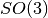. The minimum number of components that are required to describe any rotation from is 3. However, there is no representation that is non-redundant, continuous and free of singularities. We will now take a closer look at competing representations of rotations and the orientations they can describe.
Here is an overview of the representations and the conversions between them that are available in pytransform.
The following example illustrates the usage of pytransform to perform these conversions.
import numpy as np
import matplotlib.pyplot as plt
from mpl_toolkits.mplot3d import Axes3D
from pytransform.rotations import *
ax = plot_basis(R=np.eye(3), ax_s=2)
axis = 0
angle = np.pi / 2
p = np.array([1.0, 1.0, 1.0])
euler = [0, 0, 0]
euler[axis] = angle
R = matrix_from_euler_xyz(euler)
plot_basis(ax, R, p)
p = np.array([1.0, -1.0, 1.0])
euler = [0, 0, 0]
euler[2 - axis] = angle
R = matrix_from_euler_zyx(euler)
plot_basis(ax, R, p)
p = np.array([1.0, 1.0, -1.0])
R = matrix_from_angle(axis, angle)
plot_basis(ax, R, p)
p = np.array([1.0, -1.0, -1.0])
e = [unitx, unity, unitz][axis]
a = np.hstack((e, (angle,)))
R = matrix_from_axis_angle(a)
plot_basis(ax, R, p)
plot_axis_angle(ax, a, p, s=0.5)
p = np.array([-1.0, -1.0, -1.0])
q = quaternion_from_axis_angle(a)
R = matrix_from_quaternion(q)
plot_basis(ax, R, p)
plt.show()
(Source code, png, hires.png, pdf)
{kind=link}
{kind=link}
Rotation Matrix¶
The most practical representation of orientation is a rotation matrix
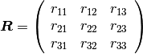
Note that
- this is a non-minimal representation for orientations because we have 9 values but only 3 degrees of freedom
 must be orthonormal
must be orthonormal- 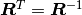

Warning
There are two conventions on how to interpret rotation matrices. We use the passive convention. The passive convention assumes that the reference coordinate system is changed by the rotation, rotated vectors or points stay at their position and are reinterpreted in the new coordinate system. Another convention is the active convention. We can easily convert rotation matrices between the two conventions by transposing them.
We can use a rotation matrix  to transform a point
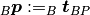 from frame
to transform a point
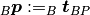 from frame  to frame
to frame
 .
.
Warning
There are two different conventions on how to use rotation matrices to apply a rotation to a vector. We can either (pre-)multiply the rotation matrix to a column vector from the left side or we can (post-)multiply it to a row vector from the right side. We will use the pre-multiplication convention.
This means that we rotate a point 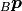 by
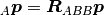
This is called linear map.
We can see that each column of such a rotation matrix is a basis vector
of frame with respect to frame .
We can plot the basis vectors of an orientation to visualize it.
Note
When plotting basis vectors it is a convention to use red for the x-axis, green for the y-axis and blue for the z-axis (RGB for xyz).
Here, we can see orientation represented by the rotation matrix
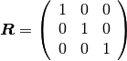
from pytransform.rotations import plot_basis
plot_basis()
(Source code, png, hires.png, pdf)
{kind=link}
{kind=link}

We can easily chain multiple rotations: we can apply the rotation defined
by after the rotation  by applying the rotation
by applying the rotation
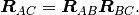
Warning
There are two different conventions on how to concatenate rotation
matrices. Suppose we have a rotation matrix  and another matrix
and another matrix
 with which we would like to rotate . We can multiply
with which we would like to rotate . We can multiply
 or
or  . The first option
means that the rotation is applied in the
local coordinate frame defined by . The second option
is equivalent to rotating in the global
coordinate system.
. The first option
means that the rotation is applied in the
local coordinate frame defined by . The second option
is equivalent to rotating in the global
coordinate system.
Pros
- It is easy to apply rotations on point vectors
- Concatenation of rotations is trivial
- You can directly read the basis vectors from the columns
Cons
- We use 9 values for 3 degrees of freedom
- Not every 3x3 matrix is a valid rotation matrix, which means for example that we cannot simply apply an optimization algorithm to rotation matrices
Axis-Angle¶
Each rotation can be represented by a single rotation around one axis.
"""
==========
Axis-angle
==========
Any rotation can be represented with a single rotation about some axis.
"""
print(__doc__)
import numpy as np
import matplotlib.pyplot as plt
from pytransform.rotations import (random_axis_angle, matrix_from_axis_angle,
plot_basis, plot_axis_angle)
original = random_axis_angle(np.random.RandomState(0))
ax = plot_axis_angle(a=original)
for fraction in np.linspace(0, 1, 50):
a = original.copy()
a[-1] = fraction * original[-1]
R = matrix_from_axis_angle(a)
plot_basis(ax, R, alpha=0.2)
plt.show()
(Source code, png, hires.png, pdf)
{kind=link}
{kind=link}

The axis can be represented as a three-dimensional unit vector and the angle by a scalar:
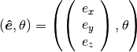
It is possible to write this in a more compact way as a rotation vector:
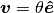
Pros
- Minimal representation (as rotation vector)
- It is easy to interpret the representation (as axis and angle)
Cons
- Concatenation involves conversion to another representation
Euler Angles¶
A complete rotation can be split into three rotations around basis vectors.
Warning
There are 24 different conventions for defining euler angles. There are 12 different valid ways to sequence rotation axes that can be interpreted as extrinsic or intrinsic rotations: XZX, XYX, YXY, YZY, ZYZ, ZXZ, XZY, XYZ, YXZ, YZX, ZYX, and ZXY. We will only use the XYZ convention and the ZYX convention with intrinsic rotations.
"""
============
Euler Angles
============
Any rotation can be represented by three consecutive rotations about three
basis vectors. Here we use either the x-y-z convention or the z-y-x convention.
"""
print(__doc__)
import numpy as np
import matplotlib.pyplot as plt
from mpl_toolkits.mplot3d import Axes3D
from pytransform.rotations import *
ax = plot_basis(R=np.eye(3), ax_s=2)
alpha, beta, gamma = np.pi, np.pi, np.pi
p = np.array([0.6, 0.4, 0.4])
R = matrix_from_euler_xyz([alpha, 0, 0])
plot_basis(ax, R, p)
R = matrix_from_euler_xyz([alpha, beta, 0])
plot_basis(ax, R, 2 * p)
R = matrix_from_euler_xyz([alpha, beta, gamma])
plot_basis(ax, R, 3 * p)
p = np.array([0.4, 0.6, 0.4])
R = matrix_from_euler_zyx([alpha, 0, 0])
plot_basis(ax, R, p, alpha=0.5)
R = matrix_from_euler_zyx([alpha, beta, 0])
plot_basis(ax, R, 2 * p, alpha=0.5)
R = matrix_from_euler_zyx([alpha, beta, gamma])
plot_basis(ax, R, 3 * p, alpha=0.5)
plt.show()
(Source code, png, hires.png, pdf)
{kind=link}
{kind=link}

Pros
- Minimal representation
Cons
- 24 different conventions
- Singularities (gimbal lock)
Quaternions¶
The unit quaternion space 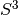 can be used to represent orientations. To do that, we use an encoding based on the rotation axis and angle.
A rotation quaternion is a four-dimensional unit vector (versor)
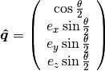
Warning
The scalar component of a quaternion is sometimes the first element and sometimes the last element of the versor. We will always use the first element to store the scalar component.
Warning
The unit quaternions 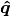 and 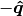 represent exactly the same rotation.
Pros
- More compact than the matrix representation and less susceptible to round-off errors
- The quaternion elements vary continuously over the unit sphere in 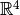 as the orientation changes, avoiding discontinuous jumps (inherent to three-dimensional parameterizations)
- Expression of the rotation matrix in terms of quaternion parameters involves no trigonometric functions
- Concatenation is simple with the quaternion product
Cons
- The representation is not straightforward to interpret
- There are always two unit quaternions that represent exactly the same rotation